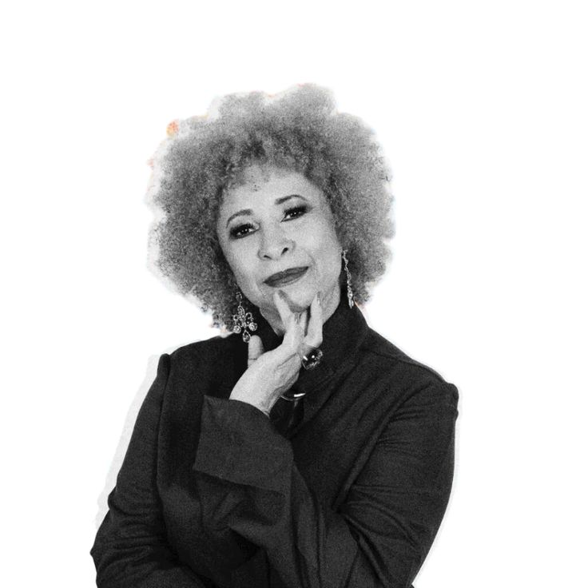

Alice Ball
Química norte-americana · 1892–1916Criou o “Método Ball”, o primeiro tratamento injetável eficaz e seguro contra a hanseníase. Primeira mulher e primeira pessoa negra a obter mestrado na Universidade do Havaí.
Conheça quatro cientistas negras nacionais e internacionais que marcaram a história.
Conhecer Histórias
Criou o “Método Ball”, o primeiro tratamento injetável eficaz e seguro contra a hanseníase. Primeira mulher e primeira pessoa negra a obter mestrado na Universidade do Havaí.

Primeira mulher negra doutora em Física no Brasil e primeira professora negra do Instituto Tecnológico de Aeronáutica (ITA).

Intelectual de destaque nos estudos sobre o conceito de quilombo na história brasileira, racismo e o papel da mulher negra na sociedade.
Primeira mulher travesti negra a conquistar o título de Doutora em Educação no Brasil e professora da UFPR.